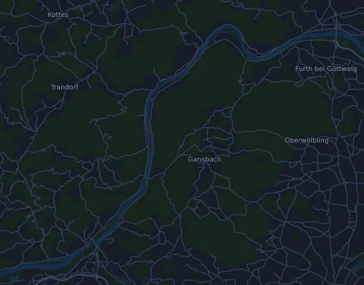

weinmalig® WACHAUmarathon – Marathon 42,3 km
- Distanz
- 42,3 km
- Höhenmeter
- ↑ 78 m
- Höchster Punkt
- 241 m ü. M.
- Untergrund
- Straße
- Profil
- Flach
- Verpflegungsstellen
- 12
Höhenprofil
Mit Mila vorbereiten
Mila ist eine Lauf-Coach-App. Nimmst du einen Lauf in deinen Plan auf, plant der Coach deine Wochen bis zum Start nach deiner Form und gibt dir eine Zielzeitprognose und einen Plan für Tempo, Getränke und Verpflegung auf der Strecke.

Der richtige Lauf am richtigen Tag.
Die Strecke

Über die Strecke
weinmalig® WACHAUmarathon – Marathon ist ein Straßenlauf in Emmersdorf an der Donau, Österreich, über 42,3 km. Die Strecke hat insgesamt 78 Höhenmeter bergauf und 91 bergab, 1,8 m pro km, und ist damit flach. Der höchste Punkt liegt auf 241 m ü. M., der tiefste auf 196 m.
Der größte Anstieg beginnt bei km 25,1: 34 Höhenmeter auf 9 km mit durchschnittlich 0,4 % Steigung, bis auf 241 m.
Der Veranstalter nennt 12 Verpflegungsstellen, die erste bei km 5,0 und die letzte bei km 39,4.
In der Mila-App beschreibt der Coach die Strecke ausführlich in deiner Sprache und plant dein Pacing und deine Verpflegung dafür.
Anstiege
| Beginnt bei | Länge | Höhenmeter | Steigung | Gipfel (m ü. M.) |
|---|---|---|---|---|
| km 25,1 | 9 km | 34 m | 0,4 % | 241 |
Vor dem Start
Verpflegungsstellen
| Bei | Angebot |
|---|---|
| km 5,0 | keine Angabe |
| km 7,5 | keine Angabe |
| km 11,7 | keine Angabe |
| km 15,4 | keine Angabe |
| km 20,0 | keine Angabe |
| km 23,1 | keine Angabe |
| km 25,1 | keine Angabe |
| km 28,7 | keine Angabe |
| km 32,5 | keine Angabe |
| km 35,0 | keine Angabe |
| km 36,9 | keine Angabe |
| km 39,4 | keine Angabe |
Quelle: wachaumarathon.com, abgerufen am 15. Oktober 2026
Pace-Tabelle
weinmalig® WACHAUmarathon – Marathon 42,3 km in 3:00:00 – Pace pro km und Zwischenzeiten
4:15 pro km · km 10: 42:34 · km 21,1: 1:29:50 · km 30: 2:07:43 · km 40: 2:50:18 · Ziel: 3:00:00
weinmalig® WACHAUmarathon – Marathon 42,3 km in 3:30:00 – Pace pro km und Zwischenzeiten
4:58 pro km · km 10: 49:40 · km 21,1: 1:44:48 · km 30: 2:29:00 · km 40: 3:18:41 · Ziel: 3:30:00
weinmalig® WACHAUmarathon – Marathon 42,3 km in 4:00:00 – Pace pro km und Zwischenzeiten
5:41 pro km · km 10: 56:46 · km 21,1: 1:59:46 · km 30: 2:50:18 · km 40: 3:47:03 · Ziel: 4:00:00
weinmalig® WACHAUmarathon – Marathon 42,3 km in 4:30:00 – Pace pro km und Zwischenzeiten
6:23 pro km · km 10: 1:03:52 · km 21,1: 2:14:45 · km 30: 3:11:35 · km 40: 4:15:26 · Ziel: 4:30:00
Die Zeiten setzen ein gleichmäßiges Tempo auf der ganzen Strecke voraus. Das ist reine Rechnung, keine Prognose: an Anstiegen, im Gedränge und an Verpflegungsstellen schwankt das Tempo.
Häufige Fragen
Wann findet weinmalig® WACHAUmarathon – Marathon 42,3 km statt?
Das Datum der nächsten Ausgabe steht noch nicht fest. Zuletzt fand der Lauf am 13. September 2026 statt.
Wie lang ist weinmalig® WACHAUmarathon – Marathon 42,3 km und wie viele Höhenmeter hat die Strecke?
Der Lauf ist 42,3 km lang mit 78 Höhenmetern bergauf und 91 bergab. Der höchste Punkt liegt auf 241 m ü. M.
Wie ist die Strecke von weinmalig® WACHAUmarathon – Marathon 42,3 km?
Die Strecke ist flach, mit durchschnittlich 1,8 Höhenmetern pro km. Sie hat einen Anstieg ab 25 Höhenmetern, bei km 25,1: 34 Höhenmeter auf 9 km. Sie führt vom Start zu einem Ziel an einem anderen Ort. Der Untergrund ist Straße.
Gibt es Verpflegungsstellen bei weinmalig® WACHAUmarathon – Marathon 42,3 km?
Ja. Der Veranstalter nennt 12 Verpflegungsstellen: km 5,0; km 7,5; km 11,7; km 15,4; km 20,0; km 23,1; km 25,1; km 28,7; km 32,5; km 35,0; km 36,9; km 39,4.
Wie teile ich mir weinmalig® WACHAUmarathon – Marathon 42,3 km ein?
Lauf mit gleichmäßiger Anstrengung und halte dich auf den ersten Kilometern zurück, wenn die Beine frisch sind und das Feld davonzieht. Die Strecke ist flach, ein gleichmäßiges Tempo pro Kilometer passt deshalb gut. In Mila bekommst du einen Pace-Plan für genau diese Strecke, passend zu deiner Form.
Ähnliche Läufe
Weitere Läufe in der Nähe
- Innsbruck Alpine Trailrun Festival – K85 Heart of the Alps Ultra 85,6 km8. Mai 2027 · Innsbruck, Österreich
- KAT100 by UTMB – Endurance Trail 75 km6. August 2027 · Kitzbühel, Österreich
- mozart 100 by UTMB – mozart Ultra (84 km)5. Juni 2027 · St. Gilgen, Österreich
- Oberbank Linz Donau Marathon (Marathon) 42,2 km11. April 2027 · Linz, Österreich
- Salzburg Marathon 42,2 km23. Mai 2027 · Salzburg, Österreich
- Großglockner Ultra-Trail | GGUT 110 km23. Juli 2027 · Kaprun, Österreich
Mit Mila vorbereiten
Der richtige Lauf am richtigen Tag.
Die Angaben stammen aus der Streckendatei und den Informationen des Veranstalters. Prüfe Datum, Startzeiten und Regeln beim Veranstalter.
Mila ist nicht mit dem Veranstalter oder den Sponsoren des Laufs verbunden und wird von ihnen weder gesponsert noch empfohlen. Namen und Marken gehören ihren Inhabern. Veranstalter oder Rechteinhaber? Änderung oder Entfernung beantragen